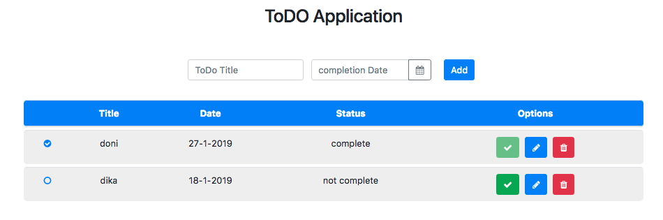

Kemampuan Akhir Yang Direncanakan
- Peserta mampu menambahkan check icon
Percobaan membuat check icon
- buka file app.component.html tambahkan code pengkondisian status complete
<tr *ngFor="let todo of todos">
<td>
<i class="fa fa-check-circle" aria-hidden="true" *ngIf="todo.complete"></i>
<i class="fa fa-circle-o" aria-hidden="true" *ngIf="!todo.complete"></i>
</td>
- sehingga code secara keseluruhan pada app.component.html seperti berikut
<div class="container">
<div class="row"><h2 class="title">ToDO Application</h2></div>
<div class="row">
<form class="form-inline">
<div class="form-row">
<div class="col-md-5">
<input
type="text"
name="title"
[(ngModel)]="newTodo.title"
class="form-control"
placeholder="ToDo Title"
autocomplete="off"
/>
</div>
<div class="col-md-5">
<!-- <input type="date" /> -->
<div class="form-group">
<div class="input-group">
<input
class="form-control"
placeholder="completion Date"
name="dp"
[(ngModel)]="newTodo.date"
ngbDatepicker
#d="ngbDatepicker"
autocomplete="off"
/>
<div class="input-group-append">
<button
class="btn btn-outline-secondary calendar"
(click)="d.toggle()"
type="button"
>
<i class="fa fa-calendar" aria-hidden="true"></i>
</button>
</div>
</div>
</div>
</div>
<div class="col-md-2">
<button class="btn btn-primary" (click)="addTodo()">Add</button>
</div>
</div>
</form>
</div>
<table class="table" *ngIf="todos.length > 0">
<thead>
<tr>
<th></th>
<th>Title</th>
<th>Date</th>
<th>Status</th>
<th>Options</th>
</tr>
</thead>
<tbody>
<tr *ngFor="let todo of todos">
<td>
<i class="fa fa-check-circle" aria-hidden="true" *ngIf="todo.complete"></i>
<i class="fa fa-circle-o" aria-hidden="true" *ngIf="!todo.complete"></i>
</td>
<td>{{ todo.title }}</td>
<td>{{ todo.date.day }}-{{ todo.date.month }}-{{ todo.date.year }}</td>
<td *ngIf="!todo.complete">not complete</td>
<td *ngIf="todo.complete">complete</td>
<td class="icons">
<button
class="btn btn-success"
(click)="completeTodo(todo)"
[disabled]="todo.complete"
>
<i class="fa fa-check"></i>
</button>
<button class="btn btn-primary"><i class="fa fa-pencil"></i></button>
<button class="btn btn-danger"><i class="fa fa-trash"></i></button>
</td>
</tr>
</tbody>
</table>
</div>
- jika benar maka yang berstatus complete maka akan tampil check circle sedangkan jika yang berstatus tidak complete maka akan muncul circle saja seperti pada gamabar berikut
